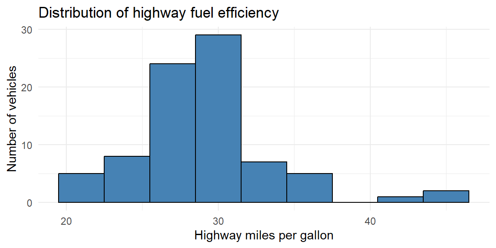
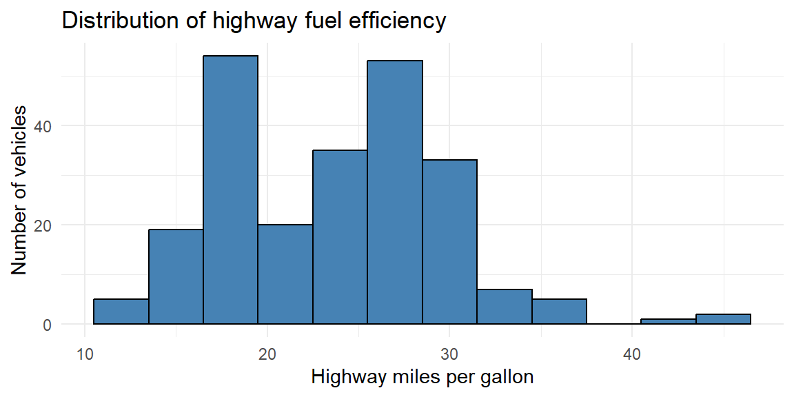
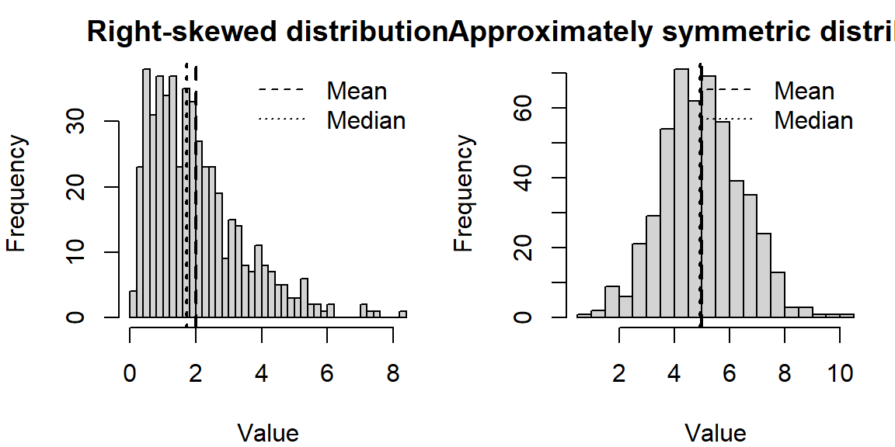

93, 96, 42, 155, 944 Describing Data with Numbers
4.1 Measures of Center (Mean, Median, Mode)
“You keep using that word. I do not think it means what you think it means.” - Inigo Montoya
One of the first things we usually want to know about a numerical variable is where it centers. When we describe a value as “typical,” we are really asking a practical question: If we had to summarize this entire group with a single number, which number would best represent it?
In this section, we explore three common measures of center—the mean, median, and mode—and consider when each provides a sensible description of what is typical.
What do we mean by “typical”?
A good measure of center should capture the central tendency of the data without being overly influenced by extreme values. However, no single summary works best in every situation. The “best” notion of typical depends on the shape of the distribution, the presence of outliers, and the context of the data.
The three most common measures of center, mean, median, and mode, answer the question of “typical” in different ways.
The mean (arithmetic average)
The mean of a sample, often denoted \(\bar{x}\), is the sum of all observations divided by the number of observations. If you imagine placing each data value as a weight on a number line, the mean is the balance point—the location where the line would balance perfectly.
Formally, for sample values \(x_1, x_2, \dots, x_n\), the mean is \[ \bar{x} = \frac{1}{n}\sum_{i=1}^n x_i. \]
Because the mean uses every observation, it incorporates all available information and is mathematically convenient. However, this same feature makes the mean sensitive to outliers. A single unusually large or small value can pull the mean away from where most of the data lie, making it a poor description of what is typical.
Example 4.1: Scutari data
Florence Nightingale is well known for her work in improving hospital conditions for British soldiers during the Crimean War. One dataset she examined recorded outcomes for soldiers treated in hospitals in Crimea and in Scutari, Turkey1.
The file scutari.jmp contains the number of soldiers hospitalized in various regiments and the number who died. Consider the number of soldiers who died in Scutari for the first five regiments:
The mean is \[ \begin{aligned} \bar{x} &= \frac{1}{5}(93 + 96 + 42 + 155 + 94) \\ &= \frac{480}{5} \\ &= 96 \end{aligned} \]
At first glance, 96 seems like a reasonable “typical” value for these data.
Now suppose a sixth regiment is added with 500 deaths. The data become:
93, 96, 42, 155, 94, 500The new mean is \[ \begin{aligned} \bar{x} &= \frac{1}{6}(980) \\ &= 163.3 \end{aligned} \]
Does 163.3 feel typical for this group? Clearly not. Most regiments had death counts well below 200, but the single extreme value dramatically inflates the mean. This example illustrates how outliers can make the mean misleading as a measure of center.
Example 4.2: Household income
Consider annual household incomes (in thousands of dollars) for a small neighborhood:
\[ 45,\, 48,\, 50,\, 52,\, 55,\, 58,\, 60,\, 62,\, 65,\, 420 \]
Most households earn between $45,000 and $65,000 per year, but one household earns $420,000.
The mean income is \[ \bar{x} = \frac{45 + 48 + 50 + 52 + 55 + 58 + 60 + 62 + 65 + 420}{10} = 91.5 \]
A “typical” income of $91,500 does not reflect the reality for most households in this neighborhood. The single high-income household pulls the mean far above where the majority of incomes lie. This is why average income statistics are often criticized.
Adjusting the mean: trimmed means
Because of its sensitivity to extremes, the mean is sometimes modified to reduce the influence of outliers. A trimmed mean removes a fixed percentage of the smallest and largest observations before computing the average.
For example, a 10% trimmed mean drops the lowest 10% and highest 10% of values, then averages the remaining data. This approach provides a compromise: it retains much of the information used by the mean while reducing the impact of extreme values.
Trimmed means are especially useful when data are moderately skewed or when a small number of outliers are present but not of primary interest.
Key takeaway
The mean is a powerful and widely used measure of center, but it answers the question of “typical” only when extreme values are not overly influential. When outliers are present—or when the distribution is strongly skewed—the mean can give a distorted picture, motivating the use of alternative summaries such as the median or trimmed mean.
The median (middle value)
The median is the value that lies at the center of an ordered dataset. When the observations are arranged from smallest to largest, the median divides the data into two equal halves: 50% of the observations are at or below the median, and 50% are at or above it.
How the median is computed depends on whether the number of observations is odd or even:
- For an odd number of observations, the median is the single middle value.
- For an even number of observations, the median is the average of the two middle values.
Because the median depends only on the order of the data and not on their numerical magnitudes, it is said to be resistant to extreme values. Large outliers may change the mean substantially, but they have little or no effect on the median unless they alter the ordering of the central observations.
This resistance makes the median a particularly useful measure of “typical” when distributions are skewed or contain outliers.
Example 4.3: Scutari data again
Recall the Scutari death counts after adding an extreme value:
42, 93, 94, 96, 155, 500There are six observations, so the median is the average of the third and fourth values in the ordered list: \[ \text{median} = \frac{94 + 96}{2} = 95. \]
Unlike the mean, which was pulled upward by the extreme value of 500, the median remains close to where most of the data lie. This robustness is why medians are often preferred for skewed data such as incomes, house prices, or medical costs, where a small number of unusually large values are common.
Example 4.4: Fuel efficiency of cars
Now consider a dataset that contains fuel efficiency (in miles per gallon) for various automobiles tested in the 1970s.
Suppose we examine the fuel efficiency of the first 11 cars in the dataset (an odd number of observations):
14.3, 17.8, 18.1, 18.7, 19.2, 21, 21, 21.4, 22.8, 22.8, 24.4Because there are 11 observations, the median is the 6th value in the ordered list:
21This value represents the fuel efficiency of a “typical” car in this subset. Even if one of the cars had extremely poor or extremely high fuel efficiency, the median would remain stable unless that extreme value crossed the center of the ordered data.
This example illustrates why the median is often reported for performance measures like fuel economy, commute times, or household expenses—contexts where a few extreme cases should not define what is typical.
The median answers the question of “typical” by focusing on position rather than magnitude. Its resistance to extreme values makes it a reliable measure of center for skewed distributions and data sets where outliers are common.
The mode (most frequent value)
The mode of a dataset is the value that occurs most frequently. Unlike the mean and median, which describe the numerical center of a distribution, the mode describes what is most common. Because it depends only on frequency, the mode can be used with categorical, ordinal, and quantitative data.
A dataset may have:
- One mode (unimodal) — a single most frequent value,
- Two modes (bimodal) — often indicating two distinct groups,
- More than two modes (multimodal) — suggesting additional structure or heterogeneity.
The mode is especially useful for categorical variables (such as favorite color or blood type) and discrete quantitative variables (such as number of visits or number of children), where identifying the most common outcome is meaningful. In these contexts, the mean may not even be defined, and the median may be less informative.
For continuous variables measured with fine precision, however, exact ties are uncommon. In such cases, the numerical mode may not be meaningful or may not exist at all. Instead, we often identify the mode visually as the peak of a histogram, representing the most densely populated region of the data rather than a single repeated value.
Example 4.5: Clinic visit counts (discrete data)
Suppose a dental clinic records the number of visits made by each of 30 patients over the course of a year. The variable is a discrete quantitative count.
0, 1, 1, 1, 1, 1, 1, 2, 2, 2, 2, 2, 2, 2, 2, 2, 2, 2, 2, 3, 3, 3, 3, 3, 3, 4, 4, 5, 5, 8We can find the mode by identifying the most frequently occurring value.
Value Count
0 1
1 6
2 12
3 6
4 2
5 2
8 1In this dataset, the most common number of visits is 3, making 3 the mode. Interpreted in context, this tells us that the typical patient visits the clinic about three times per year—not in the sense of an average, but in the sense of what happens most often.
This is a situation where the mode is particularly informative: patients and administrators may care most about the most common pattern of usage rather than a numerical balance point.
Example 4.6: Highway fuel efficiency (continuous data)
Now consider a dataset on fuel efficiency measurements for many car models.
We examine highway miles per gallon (hwy) for a subset of vehicles:
Because highway fuel efficiency is measured on a continuous scale, exact repeated values are not especially meaningful. Instead, we identify the mode as the peak of the distribution, using a histogram.

From the histogram, we see that the highest bar occurs around 28-32 mpg, indicating the modal region of the distribution. Rather than a single numerical value, the mode here represents the most common range of highway fuel efficiency among these vehicles.
This approach is typical for continuous data: the mode is interpreted as a region of highest density rather than a single repeated observation.
Key takeaway
The mode answers the question: What value occurs most often? It is indispensable for categorical data, useful for discrete counts, and informative for continuous data when interpreted through histogram peaks. While it does not use all the information in the data the way the mean does, the mode often aligns closely with how people intuitively think about what is “typical.”
The shape of a distribution
When examining a data distribution of a quantitative variable, whether portrayed by a frequency table or by a graph such as a histogram, we should look for clear peaks. Does the distribution have a single mound? A distribution of such data is called unimodal.
A distribution with two distinct mounds is called bimodal. A bimodal distribution can result, for example, when a population is polarized on a controversial issue. Suppose each subject is presented with ten scenarios in which a person found guilty of murder may be given the death penalty. If we count the number of those scenarios in which subjects feel the death penalty would be just, many responses would be close to 0 (for subjects who oppose the death penalty generally) and many would be close to 10 (for subjects who think it’s always or usually warranted for murder).
A bimodal distribution can also result when the observations come from two different groups. For instance, a histogram of the height of students at a university might show two peaks, one for females and one for males.
Example 4.7: Highway fuel efficiency (bimodal)
Below is another subset of vehicles from the data described in Example 4.6.

We see here that there are two peaks thus we call this distribution bimodal. In Example 4.6, the subset of vehicles were just 4 cylinder (smaller engine) vehicles. The data in this histogram includes vehicles with 4, 6, and 8 cylinders (larger engines). Vehicles with larger engines tend to have less highway miles per gallon than those with smaller engines. The distributions of both of these groups (small and large engines) are mixed together in this histogram giving us the bimodal shape.
Distribution Shapes
What is the shape of the distribution? The shape of the distribution is often described as symmetric or skewed.
A distribution is symmetric if the side of the distribution below a central value is a mirror image of the side above that central value. The distribution is skewed if one side of the distribution stretches out longer than the other side.
To skew means to stretch in one direction. A distribution is skewed to the left if the left tail2 is longer than the right tail. A distribution is skewed to the right if the right tail is longer than the left tail.
Choosing the right measure
How do you decide which summary to use? A few guidelines can help:
- Use the mean when the distribution is roughly symmetric without outliers. The mean connects nicely to many statistical models and formulas.
- Use the median when the distribution is skewed or contains outliers. The median provides a better sense of the typical case when extremes are present.
- Use the mode when describing the most common category or when the data are naturally discrete. For continuous variables, speak of the “modal class” (the bin with the highest frequency).
You can also look at the relationship among mean, median, and mode to diagnose shape. In a symmetric distribution these summaries coincide. In a right‑skewed distribution the mean typically lies to the right of the median, and the mode is the smallest of the three; in a left‑skewed distribution the order reverses.
Example 4.8: Illustration: skewness and the mean–median comparison
The following simulates data from a right‑skewed distribution and a symmetric distribution and plots them side by side. Notice how the mean and median behave.

In the right‑skewed distribution, the mean lies to the right of the median, reflecting the pull of larger values. In the nearly symmetric distribution, the mean and median are close together.
Working in JMP
JMP makes it easy to compute and compare these summaries.
- Use Analyze→Distribution on a single numeric column. The report shows the Mean and Median under the “Summary Statistics” section, and a “Quantiles” table lists the median explicitly. The bar under the histogram marks the median with a vertical line.
- To find the mode, examine the histogram (bins with the highest bars) or create a Tabulate table. Because continuous measurements rarely tie exactly, the notion of a mode is approximate.
- For a trimmed mean, click the red triangle ▶ next to the variable name in the Distribution platform, choose Nonparametric→TrimmedMean, and select the trimming proportion.
Recap
| Keyword | Definition |
|---|---|
| Mean | The arithmetic average: sum of all observations divided by the number of observations; sensitive to extreme values. |
| Median | The middle value when data are ordered; half the observations are at or below it; resistant to outliers. |
| Mode | The most frequently occurring value (or class) in the data; useful for categorical or discrete variables. |
| Right-skewed | A distribution where the tail extends to the right; typically mean>median>mode. |
| Left-skewed | A distribution where the tail extends to the left; typically mean<median<mode. |
Check your understanding
Problems
A sample of commuting times (in minutes) for twelve workers is \[ 10,\ 12,\ 12,\ 15,\ 16,\ 17,\ 18,\ 18,\ 18,\ 20,\ 22,\ 90. \] Use these value for the following:
Find the median commuting time.
Find the mean commuting time. How does the outlier affect the mean?
If you were advising a city planner about what most commuters experience, which summary (mean or median) would you report? Why?
For which of the following situations would the mode be a more informative summary than the mean or median? Explain your reasoning.
The test scores (0–100) from a class of 200 students.
The favorite ice-cream flavors (chocolate, vanilla, strawberry, etc.) of 150 customers.
The heights of 30 professional basketball players.
The median of five numbers is 8 and the mean is 10. If four of the numbers are 3,7,8, and 20, what is the fifth number? (Hint: Use the definitions of median and mean.)
Describe a situation in which the trimmed mean would be preferred over both the mean and the median.
Solutions
a)Ordering the commuting times yields 10,12,12,15,16,17,18,18,18,20,22,90. With 12 observations, the median is the average of the 6th and 7th values: \((17 + 18)/2 = 17.5\) minutes. b)The mean is \((10 + 12 + 12 + 15 + 16 + 17 + 18 + 18 + 18 + 20 + 22 + 90)/12 = 268/12 \approx 22.33\) minutes. The 90‑minute commute pulls the mean upward by about 5minutes compared to the median. c)For summarizing what most commuters experience, report the median (17.5minutes). It better represents the typical commute and is not inflated by the one long commute.
a)Mean or median. Test scores on a bounded 0–100 scale often form a roughly bell‑shaped distribution; either mean or median can represent typical performance. The mode might be less stable because exact scores can vary. b)Mode. Favorite flavors are categorical; reporting the most popular flavor (mode) is more meaningful than attempting to average flavors. c)Mean or median. Heights are quantitative; the mean or median conveys typical height. The mode is less useful because exact duplicates are rare and height is nearly continuous.
With five numbers, the median is the third when ordered. Because the median is 8, the third value (when the numbers are sorted) must be 8. The numbers we know are 3,7,8,20 and an unknown \(x\). After sorting them, the median (middle value) must be 8, so the sorted list must be 3,7,8,\(x\),20 (if \(x \leq 20\)) or 3,7,8,20,\(x\) (if \(x \geq 20\)). To satisfy a mean of 10, the sum of all five numbers is 5×10=50. The known sum is 3+7+8+20=38, so \(x = 12\). Check the ordering: 3,7,8,12,20 has median 8 and mean 10. Thus the fifth number is 12.
Trimmed means are useful when you expect a few extreme observations in both tails but still want to use most of the data. For example, in judging gymnastics or diving, a panel of judges gives scores; to guard against unusually high or low scores (perhaps due to bias), competitions often drop the highest and lowest score and average the rest. A trimmed mean removes these extremes, producing a fairer overall score.